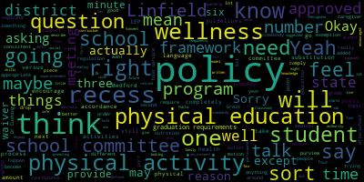
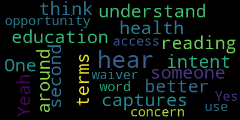
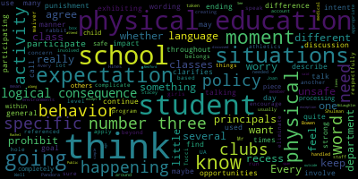
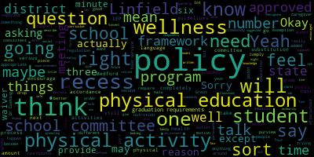
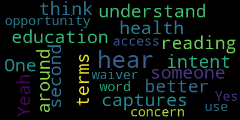
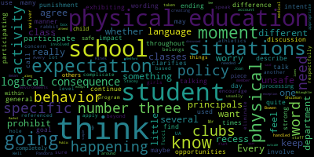

total time: 36.85 minutes
total words: 5427

total time: 19.77 minutes
total words: 2719

{kind=link}
total time: 0.52 minutes
total words: 55

{kind=link}
total time: 4.2 minutes
total words: 619

{kind=link}
total time: 7.72 minutes
total words: 1344

[Ruseau]: backslash NPS 02155 dash org dot zoom dot us slash j slash 98989768948. And additionally, if you have questions or comments, they can be submitted during the meeting. If you don't want to speak, you can email me directly at pruseau at medford.k12.ma.us. Those submitting must include the following information, your first and last name, your Medford Street address, or if you're an employee, just indicate that, your question or comment, the agenda. is that we will be needing to discuss and revise the wellness policy which is policy ADF. for K-8 students and the resolution that sent that here was as approved by the committee on May 15, 2022, the wellness and policy ADF for K-8 students be sent to the rules and policy subcommittee for revision and that it be revised as necessary to ensure unrestricted free play recess is available to all K-8 children daily as part of their social and emotional well being, the curtailing of unrestricted free play recess shall be tracked. This information shall be returned to the school committee twice each year and be disambiguated by school, grade, gender, race, disability, and socioeconomic status. Subcommittee shall invite at least one teacher and administrator from grades K to five and six to eight as well as the director of student services or designee to ensure their views are considered. The current policy and recommended revised policy will be returned to this committee no later than the first meeting in November of 2022. So I'll take the roll real quick and then explain why we are doing this so very late. Member Graham.
[lRR2dgf0NZM_SPEAKER_04]: Member McLaughlin is absent.
[Ruseau]: Member Rosado is present, two present, one absent. We have a quorum. So before we get into the details, so this is actually take three trying to do this. First time was just before we had some kind of a little health crisis called the pandemic. It wasn't little. And so we kind of delayed working on this because, well there was no recess because kids weren't in school, and there were much bigger fish to fry at that moment in time. And then last November we again Give it another try. And then we had the bullying policy, which kind of overtook this subcommittee for all of the winter and spring and summer. So here we are, try three. I think we're going to get it this time. So I am preparing for this meeting because while we did have some really good conversations last year in our November, I believe we had a meeting on November 16th or something like that. Forgive me for not having the exact date. And we had really excellent conversations, made a lot of engagement. that I don't want to rehash all of that. I don't think anybody here needs to rehash all of that. So we're not going to look at the news articles or watch a video of why recess is important. I don't think anybody here needs to really be convinced that recess is important for the social emotional stuff, classroom behavior after kids actually get proper free play recess, all the growth that I mean, Most of you here, or half of us here, are educators. I'm not one, but you all get that. So I think it's best if we get straight into the actual policy. Amber Graham, did you have something you wanted to say?
[Graham]: Yeah, I just had a question. What was the date of that meeting again?
[Ruseau]: It was, one second. And I, of course, did. November 16th is the date, I believe. 2022, honestly. Yeah.
[Graham]: Okay, a family member was literally asking me about recess this morning, who does not live in Medford. And I was like, I know we've talked about this like several times, but I'm actually going to point her to that meeting and she may find it helpful, so.
[Ruseau]: Yeah, great. So I went and looked at our current policy because the resolution from the full committee is to update that policy. I quickly realized that we were looking at another scenario for those of you that were present for that, not unlike our bullying policy, where we attempted to change the current policy for many meetings, and essentially we really only ever made progress when we just kind of flushed the old policy down the toilet and started over, and then we moved quickly. The current wellness policy, which I could share, but I don't I mean, well, actually I will share it, has language that is clearly was in, there must've been a law passed, I'm guessing in 2021 based on some of the, where's the share?
[lRR2dgf0NZM_SPEAKER_04]: I'm never gonna remember that. Okay.
[Ruseau]: The current policy on our website doesn't read like a policy. It, like the bullying policy, it reads like there was some legislation and people copied and pasted from somewhere. And, you know, there's like WIC said to do this. There's a whole section in here where there's the whereas, which is, Right here, whereas, like this reads like a resolution. And then when I read this policy, there's a couple of interesting things that are sort of like surprising. Like our goal is that the Medford public schools reach phase N. So like that was supposed to be filled in with a number of all nine elements within a five-year period. There's no date on this. So that five-year period, I've been here for six years, so that five-year period long since it's passed. And there are not policies on all of these things. So this is the current language, and I'd like to just make a motion, frankly, that we, rather than beat ourselves to death with that, existing language, which is not like the current model language from our association. A current model language from our association actually makes sense. So maybe we did this when there wasn't a model, but I'd like to make a motion that we do not try to amend the current language and that for the purposes of this meeting, that we simply move on and treat the current model language as our starting point for our deliberations to craft a new policy.
[lRR2dgf0NZM_SPEAKER_04]: Anybody want to talk about that?
[Graham]: But I did have a question. Sure. Is there a reason why all of these disparate things have to be bubbled into a wellness policy? Because if I was trying to find out what does the district think about recess versus food service. Like I would never in a million years think to go to the same policy. So one question I have is like, is there some like regulatory reason why the wellness policy has to be written like this versus in maybe components?
[Ruseau]: Sort of a couple of answers to that. Let me put this other thing that's causing my learning a couple answers there. So I didn't look up the law, but I do remember from our previous director of nursing. Tony, that the law required that the wellness policy be re-approved every, I believe she said every two years, and obviously we should find that out. Now, you can see on my screen, you can see my screen, correct? That there's in the policy naming convention, numbering convention, if you will, is these letters. And there's the sort of the high level, well, the highest level thing is foundations, but then wellness. And then you can see these dashes, where essentially, these are pieces that have been brought out into their own quote policy. But Your point is, of course, very accurate. Like we used to, I don't know if anybody remembers, but maybe a year ago, we had what was called a school attorney policy and we renamed it. I mean, because the law required a school attorney policy, but we're pretty sure nobody was coming for us if we renamed it to make it make sense that it was the district attorneys or the school committee's attorneys. So I think we can probably get away with renaming it. if it's not going to cause problems down the line where, you know, people are like, we have to have a wellness policy. I mean, we can literally put it in the language somewhere that, you know, if there's a legal reference that says school districts will have a quote wellness policy, then we put that in the legal references. And I think that's fine. But whether they're all in one giant policy or in sections, I think we can break them up into sections. So that's my take. I said there were two things I wanted to talk about on that, and I've already forgotten what the other one was. So does anybody else want to talk on that before I take the roll, too, so we can stop looking at the old one?
[lRR2dgf0NZM_SPEAKER_04]: No? Okay, good. So I will...
[Graham]: Sorry, before you do that, Dr. Edouard-Vincent, Dr. Cushing, Ms. Bowen, do you all have any reason, is there anything we're not thinking about that would require a wellness policy to be comprised of X or Y or Z?
[lRR2dgf0NZM_SPEAKER_04]: If I were, Ms. Bowen, were you gonna say something?
[SPEAKER_09]: I was listening to your point about how the current wellness policy is talking about the many different areas of wellness. Are you asking specifically if we should separate it out from the way it's currently listed so that people will know what subcategory we're talking about?
[Graham]: I'm more asking what we're required to do.
[lRR2dgf0NZM_SPEAKER_04]: Yeah, I don't know if anybody here knows the answer.
[SPEAKER_09]: I don't, I don't have that that's something that I could definitely try to get specific information. I mean, I know with rules and policy I really thought we were. some of our policies were antiquated and I know member Ruseau has been, you know, helping us to make sure that we update some of them so I was thinking more updating the existing one that was in place, and I was just going to be listening to what those revisions or updates were, but in terms of making it a freestanding policy, I would have to really research to find out is there a specific reason with the letters and how it's currently coded with MASC, there could be a deeper reason for that. So if that's a piece of research that I could just follow up on to find out, and if it needs to stay this way, then I'm fine with that. We're following the rules. And if we can separate it, I'm comfortable with separating it as well.
[Ruseau]: Great. The current MASC policy, they updated theirs in 2022. So theirs is quite fresh. They have no subcategories. But their policy, which we will get into in a minute, is really quite high level. And some of these things like nutrition education, like I'm on the HECAT. There's like, what is that, 10 lines? That's not a lot, but how much of our health curriculum is really gonna be in policy? None of it, frankly, should be in policy. So I don't know whether this is too small or too big, but I do know that the current policy we have is, it's not enforceable or implementable because it's not written as a policy. It's written as a, I don't know what to call it to be. fair and nice and appropriate on a public meeting.
[lRR2dgf0NZM_SPEAKER_04]: So.
[SPEAKER_12]: And is this the same policy where the food allergy? Yes. Needs to go?
[lRR2dgf0NZM_SPEAKER_04]: Correct. Yeah. And you look at if you look at the
[Ruseau]: MSC has not the word allergy does not exist in any MSC model language so we're a bit on our own there, but I know that. Director Heinz and some other folks have been working on language which we will have another meeting specifically for that. Because it's there's no policy recommendation from MSC on this. on allergies, my gut tells me we would actually make it a subcategory under the wellness policy. But we'd have to look, I guess we'd have to look at all of the rest of the naming conventions to see where the right place is. Policies can also go in multiple locations when that's appropriate too.
[SPEAKER_09]: Any other questions? I was just going to say, Member Ruseau and Member Graham, I am willing to reach out to MASC to just get that additional guidance as well on the allergy portion once that's ready to be submitted to the district to ask whether we can do it as a sub policy and again create create a sub policy under wellness policy, or if it has to be incorporated into this particular one?
[Ruseau]: Yeah, I've already was communicating with them today, actually.
[Graham]: Oh, OK, good.
[Ruseau]: Yeah, the answer is, unlike with the city council, ordinances actually have to be reviewed by the state. It won't surprise anybody here that nobody really seems to care that much. that we can, for the most part, do things any way we want, as long as there isn't a specific law saying we have to do it a certain way. And, you know, the language in our current one reads a bit like, you know, that Congress will establish new requirements that all school districts with a federally funded school meals program develop and implement wellness policies that address nutrition and physical activity. I mean, that might be the full extent of the law. Or I mean, that doesn't look like a law, but you know, the laws aren't typically being passed that give us enough detail. And that's where we're sort of on our own. But I think if there's no other questions, I'd like to move on so we can get to the policy. I have to take a roll call if there's no other questions.
[Graham]: Sorry, just one more question. That's okay. So is your motion essentially meaning that we are going to ultimately rescind not just ADF, but ADFR, ADFE1, and ADFE2?
[Ruseau]: Well, are you reading my notes before I've even had a chance to say those things out loud? Those are my motions I'm gonna make after we get this one done.
[Graham]: No, I wasn't, I was just reading the policy manual, trying to understand. Okay, sorry. Yes, that's next. Okay, so yes, let's vote on this piece.
[lRR2dgf0NZM_SPEAKER_04]: Member Graham. Yes. Member Ruseau, yes.
[Ruseau]: And Member McLaughlin is absent, so okay. So all that is doing is sort of resetting in our meeting here what we're gonna start with for text. to actually accomplish the goals. I might as well get those other things out of the way. So since never gonna mention them, ADF-R is also... Hi, how are you? Hi Joan, you're unmuted. Oops, sorry. Thank you. So this one here is also, this is like very strange thing. I agree specifying the software we're going to get rid of, we're going to use like it. This, this might have been a document that made sense the day we all started somewhere in the past with a like hey we need to care about this stuff but so I'd like to make a motion to rescind the ADF dash our policy.
[lRR2dgf0NZM_SPEAKER_04]: And I'll just take a vote now. Member Graham? Yes.
[Ruseau]: Member Ruseau, yes. And why on earth would my own computer not know how to spell my name? Member Ruseau, yes. And Member McLaughlin is absent. Okay, and then the next one is the odd, it's very odd.
[lRR2dgf0NZM_SPEAKER_04]: Sorry. One second. Too many windows here. ADFR is the one we actually just voted on.
[Graham]: So motion to rescind ADFE1.
[Ruseau]: Correct. And let me just bring it up so people know what it is we're doing. This is literally just the law. It is the law. I went and looked at the law earlier today. This is the text of the law. A policy, it doesn't make any sense that a policy is the text of the law.
[lRR2dgf0NZM_SPEAKER_04]: So I motion to rescind that. Second. Member Graham? Yes. Member Ruseau, yes. Member McLaughlin is absent.
[Ruseau]: And then the last one is the appendix, which is an entire bizarre, it says that we already have in place all of these policies, which I don't know if that's true, but also that's not a policy. That's what the links between policies are for. So just from a perspective of less is more here, I'd like to make a motion to rescind that one, too.
[lRR2dgf0NZM_SPEAKER_04]: Second. Thank you. Senator Graham? Yes. Senator Brousseau is yes. Okay, good. Sorry. Now, let's get on to the actual work.
[Ruseau]: So I'm going to close the policy here. So I've taken the text of the current MASC policy, since looking at it in this window isn't really any fun, and I have moved it into a Google Doc so we can work. And prior to the meeting, I went through and I fixed some of the, I use Grammarly, so I fixed some of the grammar mistakes in our model language that we were handed. And I added the policy reference the policy information as we have a policy thing we'll have that information I put that at the bottom. I just want you all to know I did that so that you know when this comes out of here you're not like that's not what we did. I've also highlighted the things that I've suggested crossing out. There are three policies in the current MASC policy manual that they say are related. In fact, EFC is not that. IHAMA is not that and KI is not that. So I've emailed them and they're going to be fixing their policy service to correct that. So I don't believe there are related policies right now that are relevant. But I just wanted you to note that I was taking those out because Those are literally not what those policies are in our policy manual or theirs. So they have a little hygiene issue there with their database maintenance. The other thing I have done ahead of time since, oh wait, nope, that was all I did. And so I'm just going to go to the top real quick. I'm not going to read this line by line because we will If we finish it today, we will be sending it to the full committee and everybody can read it. But there's really so this is the interest. There's a couple of things that I think are particularly interesting. That we will have a wellness committee. I will admit I did not look to see in the law, whether that's required, but I kind of wonder if this is ring bells to folks. Is this something you know the districts like of course as a wellness policy committee. And do we just have a different name. looking for anybody in the administration?
[Graham]: I am looking at Linfield's policy and it does also cover a wellness committee.
[lRR2dgf0NZM_SPEAKER_04]: Okay.
[Ruseau]: I mean, so we can just include it and then worry about it being implemented as another, you know, that's what the superintendent in her office does. And if in the future we decide we need to scratch it or whatever, then we can make that change now rather than digging through the law. But I found it interesting that MASC had this as part of their model language. And it's a very interesting committee. It's got a One parent, guardian, which I will change to caregiver, because that's what we use here. And student, nurse, school food service representative. We call ours the food service department. School committee member, school administrator, member of the public, and other community members as appropriate. And we doesn't really say what they'll be, oh, implementation and evaluation of this policy, okay. It's kind of strange to really have a policy saying somebody other than the superintendent will implement our policies, because that's sort of like, isn't that how it's supposed to work?
[lRR2dgf0NZM_SPEAKER_04]: So, I would,
[Graham]: not want to designate a school committee, like a person, like as a wellness program coordinator in a policy, right? Like about halfway through the paragraph, the school committee designates the following individuals as the wellness program coordinators. Like practically speaking, not want to do that. But, um, The Linfield policy that I'm looking at that I kind of like says that the superintendent along with the principal of each school shall be responsible for the implementation of this wellness policy and of addressing standards of health, wellness, nutrition, and physical activity. And that the committee like meets quarterly and reports the school committee annually. And it also says like in terms of mission, the oversight of the wellness policy and regulations and is the means of assessing and promoting a healthy environment for Linfield Public Schools. I like that one. So I sort of like their language. mostly better except like, I do like sort of how this one calls out like who the wellness committee is a little bit better. So I feel like the first half of this might like make some sense. And I guess the question maybe for Howard is, is wellness coordinator a like defined role that we are supposed to have?
[lRR2dgf0NZM_SPEAKER_04]: Linfield doesn't. Say that. And. I'm just.
[Graham]: going to copy this language. Actually, can you give me access to this document?
[Ruseau]: Sure.
[Graham]: And I can just drop the language right in?
[Ruseau]: Yes, it's important to note that when the meeting is over, we have to stop looking at the document because that would be an OML violation.
[lRR2dgf0NZM_SPEAKER_04]: But anyways, yes, if you want to put that in there. Did you, here it goes, okay. You all see what I just dropped in? I like it.
[Graham]: And I, I feel like meeting, I don't know, superintendent, if you disagree, but I feel like meeting quarterly is a lot. If the purview of this committee is as narrow as policy.
[lRR2dgf0NZM_SPEAKER_04]: Yeah.
[SPEAKER_09]: I think meeting twice annually, definitely it's reasonable. Okay. where there, when you had mentioned the allergies, Member Ruseau, I did not specifically think to have Director Hines or our Director Retter-Smith.
[Ruseau]: Yeah, I mean, that's a, we'll have a whole meeting on that specifically. So, yeah.
[Graham]: I guess like the other question I had, just structurally, like could we like sort of describe this like main policy as sort of everything that's supposed to be in this policy from a model perspective, except food service, except allergies and except recess. And that those three things are like sort of topics unto themselves. So they could be sub policies.
[Ruseau]: But I like that approach as well. We have a member of the community that would like to speak. Shanine.
[Peloquin]: Hi, everybody. Having a separate policy for allergies is consistent with what I've seen in the other manuals. And I just wanted to let you know that Retta and Avery and I all met yesterday to really hash out all of the questions that need to be answered in the allergy policy. So where the policy draft that had been discussed before this body before is a very old, very wordy policy that no one will read and no one is adhering to. So we're going to make sure that it is consistent with the, um, Department of Early and Secondary Education recommendations, which is what the CDC recommendations are built off of and have it have clear role delineation for who's responsible for what parts of allergy management. So that will be forthcoming, but it's in process.
[Ruseau]: Excellent, thank you. Yeah, so I think, so let's, I mean, we don't really decide that, sorry.
[Graham]: Can I just ask a question? I just wanna clarify something. Maybe Dr. Edward-Vincent or Shanine can answer this question. Is the plan for that subgroup to bring their suggested policy to this group so that it can be officially adopted by the school committee?
[Peloquin]: That would be my understanding, yes. Paul and I have been discussing doing this as part of the wellness policy, but rather than just implementing or approving a policy that wasn't well suited for the district as it is and the kids with the allergies and the reality of every day. We wanted to make sure that we had more time to really flesh that out while getting the rest of this passed.
[SPEAKER_09]: And I was just going to comment that I have not, I wasn't at yesterday's meeting, but Ms. Bowen and myself, once we are caught up to speed on where things are landing, we'll definitely bring it back before the committee to have that added. Because we want to make sure we have a consistent approach across the district.
[Peloquin]: Yeah, that's definitely one of the goals is to make sure that across each school that it's being implemented consistently, that PTO events and field trips and all of the pieces are consistent and easily accessible.
[Ruseau]: Okay. Based on the feedback we got yesterday about the bullying policy and how it was like people could use it, I'm pretty hopeful about a new allergy policy, but I say a new allergy policy, but like there is no allergy policy. If you look at our allergy in our current policy service, I mean, as I think everybody here knows, like when a school district must have policy, if the school committee does not speak on that by saying, this is our policy, then the policy is whatever the superintendent says. And so I'm not saying that there's nothing in the district that cares about allergies. I just mean that there's no school committee policy on it. Um, just don't invite to think that it's a complete free for all. Um, so, um, I, I like those changes and I don't see any reason not to just accept them. Um, and we haven't approved this as a thing to really be amended. So I'm going to just click. To accept them rather than, uh, come back and look at this Google doc in the future and be like, what did we say? Um, agree.
[lRR2dgf0NZM_SPEAKER_04]: We're just going to fix those while we're here.
[Ruseau]: And so the school committee designating the individual as the, I just want to scratch that entirely.
[Graham]: Yeah, I think we should delete it completely.
[Ruseau]: That doesn't make sense.
[Graham]: Sorry, I thought I did, and it didn't. Maybe go through.
[lRR2dgf0NZM_SPEAKER_04]: All right. All right, I'll worry about that later.
[Ruseau]: Great, so next we have the national guidelines, excuse me, nutrition guidelines.
[Graham]: I feel like that should go in the food service sub-policy, so it doesn't belong here.
[Ruseau]: So what I'm gonna do is just literally have nutrition,
[lRR2dgf0NZM_SPEAKER_04]: And we will add that when we develop that and not take that up right now. Does that sound good? Yes. Are you going to delete it from this document? Yes.
[Ruseau]: Great. Well, yes, I am. Okay. You know, I find it so interesting that there's nutrition guidelines, but then there's nutrition and physical education and it's like, Is it called nutrition and physical education nowadays or is it like dietary? Like, is it, are we still using the word nutrition? Is that not up to date on that stuff?
[lRR2dgf0NZM_SPEAKER_04]: I would say it's health and wellness. Yeah. Health and wellness are, yeah. And then we can still call it that so that we, um,
[SPEAKER_12]: Does anything on sexuality education need to be in there? Oh God, yes, but. No. Because nobody is touching it with a 10 foot pole.
[Cushing]: No, I could interject. I I think that it's curriculum, right? That's curriculum focused and. You know it wouldn't necessarily be here.
[Graham]: Anyway, yeah, I mean because because it's curriculum we we don't have authority over it anyway.
[lRR2dgf0NZM_SPEAKER_04]: Yeah, there's something in here about it. Maybe it was a different, I've read so many different policies from other districts that my head has been filled up.
[Ruseau]: So let's just skip that one for now. So this nutrition education, it's interesting that they're, recommendation is actually like, we can't use this language. This is like, hey, maybe you want to consider some of these goals. And so I'm a little bit confused on this one, because we just want all of this stuff, right? Isn't this a bit, I mean, I don't know what to do with this section here.
[Graham]: I am going to drop in what Linfield has in their policy, I think it's like really brief and sufficient.
[Ruseau]: Yeah, because in the heat cap, we've talked a lot about nutrition and diet and culturally appropriate ways of teaching that kind of stuff. And so I would be a little uncomfortable with being prescriptive in this. Do any of the educators here have, I mean, nutrition is integrated into health curriculum and core curriculum. Like, yeah. I just don't know. Getting back to like our bullying policy, like we took it from this giant thing and made it a lot smaller. And if we want people to read the policies, they cannot go on and on about stuff that is irrelevant to knowing what we are expecting.
[Graham]: So if we just look at what I forwarded over, Medford strives to provide nutrition education at all grade levels by integrating it into other subjects and having it as part of health education. Students will gain the knowledge and skills to select a diet that supports health and reduces the risk of illness and future chronic diseases in accordance with state standards. Like, do we need to say anything more than that?
[lRR2dgf0NZM_SPEAKER_04]: I don't think so. Anybody? I also want to comment on that. All right.
[Lungo-Koehn]: No, I think that captures it in terms of health education K to 12.
[lRR2dgf0NZM_SPEAKER_04]: I get color. Thank you. All right. Physical education, we have. OK, so this is where.
[Ruseau]: Let's just do the physical education because it is the last section, and then we'll go and add them will get to the point of why we're here recess. Because physical education activities to me has nothing to do with recess. So let's get that through. And Jenny, are you going to pop in what Linfield has? Yeah.
[Graham]: So they do commingle recess a fair bit into this policy, into this piece, which I don't think we should do. But they do describe physical activity and physical education as well, hold on one second, as well as health education. So that's like a whole separate topic, but they talk about physical activity and physical education. And I just think maybe we might like to use this more as like a suggestion. So let me, I'm gonna drop it right after nutrition.
[Galusi]: I think that clarifies the difference between the class and general activity opportunities throughout the school day.
[lRR2dgf0NZM_SPEAKER_04]: Yeah, I like that physical activity being really separated like that. just fixed all the LPSs.
[Graham]: So physical activity, it basically says, we shall provide a physical and social environment that encourages safe and enjoyable activities for all students. Great. Classroom teachers shall be encouraged in supporting their efforts to incorporate movement as part of classroom activities to provide short physical activity breaks between lessons and classes. This one is sort of like starts to get a little bit murky because it starts to talk about recess. So maybe for clarity, we just say we prohibit the use of withholding of physical activity as a punishment. And like, we deal with like the recess aspects of this in the recess policy. And then I would take out four and five completely because they're about recess. So that can be dealt with in the recess policy. And then if you keep going, six, all students grade K to 12 will participate in sequential developmentally appropriate physical education. Consistent with Massachusetts curriculum frameworks, the physical education program will promote the knowledge, skills, and attitudes necessary to foster lifelong enjoyment and participation of physical activity for wellness. MPS will encourage relationships between families and community members to institute programs that support physical activity. I don't exactly think I know what that means, but It doesn't like strike me significantly one way or the other.
[Ruseau]: Well, it does make it longer for no reason.
[Graham]: Fair. Encourage family and community members to institute programs that support physical activities such as promoting safe routes to school program for those students that live within a walkable, bikeable distance to school. I actually think that is useful. Afterschool programs will be encouraged to provide options that provide developmentally appropriate physical activity for students. I think that's reasonable and consistent with what we try to do. MPS will encourage the offering of opportunities for students to participate in physical activity before and after the school day through a variety of methods. I feel like that sounds great, but it doesn't need to be in policy.
[lRR2dgf0NZM_SPEAKER_04]: No, and it's also, it's been covered already.
[Ruseau]: Yeah, exactly. I think I'd get rid of 11.
[SPEAKER_12]: Okay, I agree.
[Ruseau]: So four and five, I'm just going to go to the bottom of this and put it in the same document. as things we want to incorporate into there. I like that, you know, we just use the word recess and then the policy can hyperlink over to the recess policy instead of everywhere we use the word, we painfully define it.
[Galusi]: So- Could we, I don't know where this is ending or how this is going, but I would like to just talk about the wording in number three. because I find the use of prohibit quite strong. And there are situations in which if a student is exhibiting unsafe behavior or if a student has, I think there are situations in which physical, I don't like the word prohibit and I don't like the word punishment. And so I think there are times that logical consequences do involve that students are not participating in a physical activity because that is the manner in which they have been physical. And I know we don't have many principals on this call, but I think that I'd like to have a discussion about the language that's used to describe number three and maybe what the goal and intent of number three is.
[SPEAKER_12]: I guess I want to make sure that we do have like recess should not be taken away by
[Peloquin]: as a consequence, because unless the behavior is happening at recess, it's not relevant. But that's my point.
[Galusi]: So what if the recess is happening? What if the behavior is happening at recess?
[Peloquin]: But taking a like, we need a different behavioral strategy than removal of recess. And like walking recesses, public shaming. And there's like, I think we need to have a better way of helping address the behaviors that come up at recess, like the collaborative problem solving model, which would be like, you're having difficulty doing blah, blah, blah, what's going on, and figuring out what the actual problem is, because taking away recess isn't actually teaching a kid anything.
[Galusi]: But I'm talking about in the moment. So unsafe behavior cannot continue where it may impact other students. So there are, I just don't want to have, agree with you, because I completely agree with the logical consequence piece, and you need that processing with students, but in the moment, if you have to keep that child and others safe, then there are going to be moments when that is the logical consequence, because it's happening within the moment.
[SPEAKER_12]: Ms. Glucy, if I can also, oh, sorry.
[Cushing]: Oh, sorry, go ahead.
[Demos]: I'm sorry, I'm, I can't see the screen because I'm in my car so I'm sorry if I spoke over somebody, but I just wanted to kind of echo what Miss Lucy was saying and the fact that with the responsive classroom model and logical consequences. Those would be the examples that I would say you know if there was a student who was very physically aggressive outside and it was unsafe, there would be the logical consequence right then and there to miss a few minutes of the recess to have a conversation with the teacher. And then, you know, depending on if they were able to regulate and go back into play, they could, it wouldn't be something that is a practice that we decide in class that we are not going to send them to. So I just want to make sure that if this is something that we were going to look to create a policy right here and right today, I would strongly encourage that maybe we get just to kind of extend it just a little bit. I'd be more than happy to like sit with some of the stakeholders and talk about what this looks like in that before we get into using the word prohibit, because I think that in the elementary world, there's logical consequences that we are striving to have teachable moments in, and I think that would take that ability away from us.
[Ruseau]: Thank you. Who's speaking? Sorry.
[Demos]: I'm sorry. This is Shannon Demos. I'm the principal at the Brooks Elementary.
[Ruseau]: I thought so, but I just wanted to be sure.
[Demos]: Yeah, yeah. Sorry. I don't know. I think I might come up as my husband's phone on the car. Sorry. I have his car today. Yep.
[Graham]: Mr. Tucci has his hand in the air to.
[Tucci]: I good afternoon everybody. I just like to acknowledge the fact that you know oftentimes sometimes we do come into play where we employ a lot of restorative practices in during the recess time frame to be able to have mediations between students and have conversations between students to be able to work out conflict. and issues that may arise. This time is a unique time that allows a person like myself and my assistant principal to be able to pull impacted students and be able to do the work that needs to be done in a restorative fashion to be able to help resolve and capture appropriate teachable messages while not impacting class time. which is obviously very impactful and important time that we really try to savor. Oftentimes, this might be done for a portion of recess, and then we do try to push the students back into giving them an opportunity to be able to get some exercise, get some fresh air and socialization with peers, but after we feel like we've done our work that needs to be done. So I do want to acknowledge that, that that's something that oftentimes does happen in many different ways. And I know we've made a big push to be able to, you know, move in the direction of moving towards more restorative practices. And that's where I've seen us be able to make some really good headway in the past couple of years.
[Graham]: So I feel like we're like, you know, diving fast into the recess policy here, but I wonder if like for the purposes of like this physical activity section, Could we remove this bullet completely in its entirety? Because we have to get there as it relates to recess. in the recess policy, which is to me the more appropriate place for us to talk about this. But I will also say I've heard lots of stories about logical consequences being used to like completely inappropriately and not necessarily here in Medford, but just as a general statement as like there's complete justification for taking recess away because I told them that that's what was going to happen. you know, do whatever it was. So I think we have to talk about that and like, you know, all the things, all the other things you guys are talking about, but I don't think like we have to get spun up in this part of the policy. Really, that's just my take.
[Ruseau]: Yeah, I think, you know, the concept of logical consequences is not logical. I say I'm going to do something. Well, it can be. It can be. But if I say I'm going to do something, if you do that, it is not logical that I punish you the way I said I was going to punish you. That's not the logic. The logic is that the thing you did is related to the punishment, not because I said so. And I think, I mean, I don't know if this is a professional development issue or what, but, you know, The example of, that we were just discussing, like we're in recess, there's a behavior that requires remediation of some way that just can't continue as is. That isn't, in my mind, the principal source of this conversation. It is, you didn't do your homework, so you're going to sit in class during recess and do your homework. And even if you told the kids that's what you're going to do, that's not a logical consequence. you know, those are the kinds of things that I have heard of, and I have heard of them in Medford. Now, I don't have elementary kids anymore, so I can't speak to the last couple of years, especially during the pandemic. But, you know, that sort of was the motivation for this entire policy coming here around recess was that it was, you know, some teachers were more willing to just take recess away for reasons that They're not that they weren't valid reasons to have a consequence. That is not what I'm suggesting. I'm just saying that the consequence wasn't related to recess and leads, you know, the research, which we are not going to go through again today, is clear. Like, literally, you know, you're biting your nose to spite your face, whatever that saying is. I'm sorry. I'm terrible with those. it doesn't have the consequence that anybody actually wanted, not to mention the consequence on the kids. So I'm fine with moving this entire part to the recess conversation and policy, which will be a sub-policy, just so we can keep moving.
[lRR2dgf0NZM_SPEAKER_04]: Agree. All right. I think this physical activity section looks digestible and reasonable now. if we accept those changes.
[Ruseau]: I will remember those when we're all not staring at the screen together, because I don't know what that just did.
[lRR2dgf0NZM_SPEAKER_04]: Anyways, all right, so thank you.
[Ruseau]: So the next section is the, did anybody else have anything they wanted to say? I didn't mean to like, just like rush through that. I just feel like since we're taking a whole new policy to start from scratch, time isn't our friend.
[SPEAKER_09]: I think the adjustments moving those other specific indicators to the next policy that that, you know, I just was in complete agreement with that.
[Tucci]: Mr. Ducci? My only piece of feedback or more of a question might be, is this a place where we do need to note our athletics programming that is offered at the Medford Public Schools as a part of this physical activity and physical education component here?
[lRR2dgf0NZM_SPEAKER_04]: Could you think through that? Because I hadn't thought about it. I don't know.
[Ruseau]: I feel like athletics, I just worry about pulling that, partially because I know so little about athletics, I'll be honest. But I think the athletics, meaning not during the school day athletics, is one of those areas where it's like, what is a school activity? What is not? Where are rules and authority go? I just get sort of, frankly, a little confused.
[lRR2dgf0NZM_SPEAKER_04]: Okay, Amber Graham's gonna solve it. I don't know, Mr. G, are you able to see the screen?
[Tucci]: I am, and you know, I just want to make sure we celebrate this and, you know, acknowledge the fact that, you know, we have a very strong athletics program that is with the MMIA, as what Jenny is writing here. So I think that's, that'll capture it. Thank you.
[Galusi]: And I don't want to complicate things, but I think there was one that we did eliminate that referenced, like clubs, because I think there's also a lot of after school clubs that also encourage physical activity. I know several schools have girls on the run. I'm sure Mr. Tucci could speak to some other beyond just the athletics program, just after school clubs.
[Tucci]: Absolutely. There's volleyball club at the middle school level, indoor soccer club in the wintertime that aren't encapsulated in the athletics program. So to put, um, you know, athletics program, as well as other extracurricular type of activities like clubbing, uh, activities is appropriate.
[Graham]: I just added the word extracurricular to number six, because when I read afterschool, I've sort of been drilled into my brain that we mean the K to five afterschool program. Lots of other things happen after school too. So I just added an extracurricular activities, number six. And then I basically put a number seven that references like applicable MIA guidelines.
[Ruseau]: And for number seven, do we also want to say slash GVL guidelines, because that's not part of MIAA, right?
[Graham]: I think they're subject to MIAA guidelines, right, Dr. Cushing?
[Cushing]: That is correct. So I would see MIAA as the state governing authority where the GBL is subservient to those regulations.
[Ruseau]: Perfect. Less is more. Thank you. All right. Let's move on.
[Peloquin]: Sorry, I'm not used to raising my hand. Do we need to include the ADA there? Because right now they're not compliant with the ADA or the 504 guidelines. In terms of inclusion for kids with disabilities, right now they're excluded. Unless, yeah. So like kids with physical disabilities are not currently participating in no-cut sports and kids with developmental disabilities are excluded from after-school programs. because they're not getting the support that they need or not allowed to come to PTO sponsored activities, even though they received substantial support from the school. So, which is a whole separate conversation, but if we're including that the athletics program should comply with things, then maybe they should comply with civil rights laws.
[Graham]: Yeah. I mean, well, PTO stuff is like a super sticky wicket because we have no authority
[Peloquin]: over the PTOs. They still have to comply because they're receiving substantial support from a federally funded agency. The PTOs are? Well, yeah, because they wouldn't exist if not for the school. So they would not pass the test of being able to say, sorry, we can discriminate against kids with disabilities. I don't mean to derail this conversation. Just if you're saying that they need to apply with particular guidelines, then we should also include that.
[Graham]: So I guess my take is that the MIAA guidelines, Dr. Cushing, correct me if I'm wrong, would lay out guidelines that are consistent with federal regulations. Is that?
[Cushing]: You're correct. You're correct. I'd hesitate on putting any language in on that right now until we can do some further research just to be 100% accurate. So if that could be put at the bottom, similar to how some other things were, I think that's a good thing to research between now and the next meeting.
[Graham]: Great. Yeah. Can we just maybe put a comment for six and seven?
[lRR2dgf0NZM_SPEAKER_04]: around whether there's something there that can describe consistent application of
[SPEAKER_09]: guidelines. And I just wanted to interject that we are following the MIA guidelines and that's approved by the state. And I understand that as a district, we have been making a commitment. We have started many other districts aren't doing it, but we have the unified sports that Medford is doing and participating with Maldon and a few other districts that are taking the lead and creating inclusive opportunities for our students of all different abilities. So I do want to go on the record of saying that it might not be the, you know, The GBL events but as a district we are prioritizing our students of different abilities and our unified sports program is an example of that. And today we're kicking off. the basketball at the high school level. It's at the secondary level, but we are attempting to be an inclusive community. So I just wanted to comment for the committee. Thank you.
[Graham]: And Shanine, I think your points are well taken. And I think we just probably all need a minute to figure out what policy issues we need to solve and reflect here versus what you are describing. I'm not as familiar with the instances that you're talking about, but that's just because I'm not as familiar. So I don't feel like I know how to fix the policy today. But yeah, I agree.
[lRR2dgf0NZM_SPEAKER_04]: We should make sure that we're being clear about that as well. Okay. I'd like to welcome Member McLaughlin, who has just joined us. Hello. Am I unmuted? I am. Good.
[McLaughlin]: Sorry. I didn't know if I could unmute. It wasn't working for a moment. Thank you. I was presenting on disability awareness. My apologies.
[Ruseau]: No worries. So... We are on B, physical education. So just a super one minute, what we've been doing. We looked at the current policy. It is sort of like the bullying policy, could not be resuscitated. And so we had gone to the model language from MASC. and we have been making modifications from there. And sort of like the bullying policy, our wellness policy looked frankly a lot like something that may have been created the day that the law somewhere was passed or something. It wasn't really a policy. So we are now working our way through that model language and incorporating changes from other districts that looked good, rather than writing from scratch. So we are on to the physical education section. So I'm looking at the amount of time, physical education, we required subject in K to 12. Elementary 75 minutes per week, full year, middle 90 minutes per week. I don't think this is how we do it though, because we, no, I didn't think so.
[Graham]: This is from Winfield. So I think my question is what is the right description of our timeframes and do they need to be reflected in policy at all?
[Ruseau]: Yeah, I mean, I'll let those hands up and speak in a moment, but my preference around this is to, you know, after number one, you know, comma in compliance with state requirements or something along those lines, because those do change. I know there's a health curriculum. update coming down that we have to redo this policy just because they've said no, not 20 minutes, you need 21. But that's just my take on it. I don't know whose hand went up first, but I'll go with Mr. Tucci.
[Tucci]: Just a comment on the middle school. Middle school is 90 minutes per week as well here in Medford. If we were to add recess, it would add an additional 100 minutes because students on average get 20 minutes of recess each day.
[Ruseau]: Oh, and thank you and Dr. Cushing.
[Cushing]: Yep, thank you very much for the opportunity to speak just real quick, I would like to, again, take this back to our phys ed and health director, Rachel Perry, to make sure that she goes through this, and I know that one of the things that we were slightly disappointed in was with the new standards that were just approved by the Board of Elementary and Secondary Education that the physical education standards really were not enhanced as the health standards were. So it's not that we're working towards the national health standards. I know that those are the standards we're implementing. So I'd really like to take this back to her. So I think that she and her teachers might be able to offer some really good insight on language changes here to be the best applicable.
[Ruseau]: Great, thank you. What are you material reductions in total minutes per week? Oh, okay.
[McLaughlin]: Member McLaughlin. Sorry. Yeah, go ahead, sorry.
[Lungo-Koehn]: Can someone hear me? I'm reading my... One second.
[Ruseau]: Member McLaughlin, you broke up hardcore when you were just speaking.
[McLaughlin]: Oh, I said, can someone let me rename myself, please? The chat is disabled.
[Ruseau]: Sure. Dr. Cushing, could you do that? I'll put it in the chat. Thank you. Dr. Cushing, I think you'll have to do that.
[lRR2dgf0NZM_SPEAKER_04]: Thank you. Oh, there you are. It clears the bell now. Great. Did you do that?
[Graham]: So what I just did in the language was remove the number of minutes from policy. And in that first bullet, as you were describing, talk about like, that we will obviously comply at minimum with the state approved frameworks. But I also added a line which I'm totally open to discussion about that, if for some reason the district is gonna materially change the amount of minutes of physical education, that that would, be something that would come to the school committee for approval, because if we're gonna reduce the amount of physical activity going on, I feel like that is worthy of a discussion, even though we're not laying out some hard amount of time that we're binding the district to in the policy.
[Ruseau]: Yeah, I happen to like that because, yeah, nothing being done wrong here, but we will, as school committee members, hear from parents if this happens. So I would, if we can get ahead of it, that's always a good thing. Dr. Cushing?
[Cushing]: Yeah, so I just wanted to say that, you know, I think that offers the flexibility still, and we would definitely notify the committee, but there are some opportunities to, you know, take physical education from, say, being two times per week and, you know, physical education is really focused on curriculum, not just the minutes of activity. Physical education should not be seen as a student's, a child's only outlet for physical activity during the week. It should be a curriculum focused opportunity to build a lifelong love of physical activity and there may be room to say schedule you know things on the quarter where you'll go for 45 days straight and then you'll switch up and you'll go to other unified arts but just allowing us the scheduling flexibility which would still meet the state standards and would probably actually expand the amount of time available to students when you think about two times over the course of a year. just something to consider. It's not really necessary now, but I don't want to limit the flexibility as we really look at improving scheduling in our middle schools.
[Graham]: So I just suggested a change that says like the material reductions in total minutes per year of physical education is what would require school committee approval. So if we're going to you know, that would sort of give us some like leeway on the scheduling piece, but not, but still like require that if somebody was like, we're going to cut phys ed in half, that that conversation can be had with the school committee.
[Ruseau]: It sounds good to me. Looking at the suggested changes, I don't see any reason to not accept those unless anybody else does.
[Graham]: I did have a question about this number four. Again, this is from Linfield. Waivers, exemptions and substitutions for physical education will not be granted except to meet a student's medical or social emotional needs. I guess what I would rather talk about is like, the process for waivers, exemptions and substitutions so that they are consistently applied versus like this.
[Ruseau]: If I can just jump in, this is a very strange, I mean, this means like a senior who doesn't have enough physical education and is in a car accident, we're not gonna let them graduate. That's what this says.
[Graham]: Well, that would be a medical need, I suppose.
[Ruseau]: What? No. Oh, it says except to. I'm sorry. I thought it meant include. Oh, no. OK. But this to me, it feels like it's really getting at how. Many of our students on IEPs, frankly, do miss an awful lot of things. I don't know if PE is among them. I think it is. I know it is from my own child's experience that health curriculum just didn't get taught because there were only so many hours a day and so many services that needed to be done. I'm wondering if that's not what the point of this is. I would also wonder very much like, so how does Linfield manage it then? Like, you can't not give a kid reading services because they need health education.
[Graham]: Well, this is just, Ed, this is just physical education section.
[lRR2dgf0NZM_SPEAKER_04]: This isn't talking about health education.
[Graham]: Remember, sorry.
[lRR2dgf0NZM_SPEAKER_04]: Go ahead, you froze and we can't hear you. I'm gonna stop your video to see if that helps. Sarah McLaughlin, can you hear us?
[McLaughlin]: Yeah, and also to that point, you can't not give a child physical education because they need one.
[Ruseau]: Yeah.
[McLaughlin]: Can you hear me now?
[Ruseau]: I just heard what you just said, yes.
[Lungo-Koehn]: Yeah, you can't hear me? That's better.
[lRR2dgf0NZM_SPEAKER_04]: We can hear you.
[McLaughlin]: You can hear me now?
[lRR2dgf0NZM_SPEAKER_04]: Yes. Yes.
[McLaughlin]: Yeah, that was all just delayed because I said whatever you guys heard like two minutes ago. So that's weird. But anyway, can you hear me now? No, and I was just going to say, and to your point, like you said something about a child can't, you know, miss reading, you know, supports because they are required to have phys ed. And I would say, And the converse of that, the child can't miss phys ed because they have to have reading support. So it's like the curriculum is required for both. So it's not just that this is where you miss gym because you have to have reading sports. That's also not how it works, just saying.
[lRR2dgf0NZM_SPEAKER_04]: Right.
[Graham]: So maybe that's what this is getting after, but it doesn't really say that.
[Galusi]: It doesn't. And I think my concern is with the word waiver, because that's a school policy, like a school-based, school-level policy.
[Lungo-Koehn]: I understand if the intent is around opportunity and access, but I just, I have a concern with the use of the word waiver.
[Graham]: Or even substitutions, like, I don't even know what that would entail for us. Like, does that mean I... It could mean PT, like if people are doing physical therapy.
[Ruseau]: But I mean, when I read this, like if a student has, well, social emotional needs, like if their IEP had something about that was a social emotional need. They cannot go to gym class. Right, then that would be acceptable. But I just, I don't know what this is getting at. And I just don't know what this is getting at because it's very, very, watered down if the real issue here is we need our students on IEPs to get this education like everybody else. Like, you should just say that. Instead, it's this like murky thing that isn't even addressing that issue at all.
[McLaughlin]: I think what it's saying is that, I think it is soft in terms of what it's saying, but what it's saying is that everyone is required to take physical education unless you have an exemption, is really what it's saying. And the exemption might be medical or social emotional, but that would be indicated on a IEP or 504. So, physical education is a requirement unless there is, an exemption according to, you know, IDA or ADA, that would be it, you know.
[SPEAKER_09]: I just insert that I think number four actually says that, and I think you should delete number three.
[McLaughlin]: because well, number may I for a moment, sorry, member Rousseau. Number four says that in a very all encompassing way, and it does, but it doesn't address when some students aren't able to go to the gym class. So that says all students, regardless of their ability, which is that's wording I would not want, but regardless of their ability are integrated into physical education classes throughout the district. are integrated, perhaps, but what does that look like? So some students might not be able to go into the physical education class, for example, if the gym has a lot of audio echoing and there's a lot of issues with, you know, sensitivity to, you know, noise or sound or something like that, which some children have that. So, um, I think it's not eliminating three and keeping four. I think it might be an integration of three and four.
[Ruseau]: Yeah, I would just say that, you know, I actually think three and four mixed together makes sense because this is policy. It's not supposed to be like, hey, do whatever you want. And what's the point of the policy?
[Graham]: So, you know, wait, before we do that, I actually think they should be separate. And I think that because there's a difference between a waiver, an exemption, or a substitution, whatever those things are, that is like specifically requested by a student or caregiver, and that there should be a process to vet those, whether it's like in accordance with an IEP or 504, that's fine, but there probably are other reasons, right? Like, you know, student gets an accident, needs to not have gym class for six months, right? So I think what I'd like to see number three become is about that students and caregivers may request this and that those decisions will be made in accordance with the 504s, IEPs or specific circumstances and who will, how do you do that? Like, that's what I would like to see number three become is like, if I need a waiver for my kid, how do I do that? Like, how does it happen? And that that's the policy, that there is a process in order for people that we have, we have a process in order for people to request a waiver, should they need it, to me is what three should become, which is to me also different than the inverse of that, which is the district saying, we don't have time to teach your kid physical education, which is a different problem. So I feel like there's like, am I the caregiver requesting that or is the, is the school district telling me that? And I think those are two different sort of needles to thread.
[Ruseau]: Mr. Tucci.
[Tucci]: Yes, I wanted to provide some real world context to maybe a situation here at the middle school level. There are times where some students may be enrolled in orchestra or band. And oftentimes when the addition of a couple of those classes are added to a student's schedule, They may end up having one less physical education class because of the addition of those classes into their schedule. So I wanted to just provide that example of where I've seen this come into play at the middle school level.
[lRR2dgf0NZM_SPEAKER_04]: Yeah, that was. Yes.
[McLaughlin]: Yeah, I was going to say that's totally outside of the scope of both of these, which is really interesting. So that's an interesting point, you know, altogether different. I just, I guess I was going to say for three, you know, what I'm hearing is instead of saying, you know, these things will not be granted, except I think what I'm hearing is that, you know, they can be great, you know, these things can be granted, maybe request. Yeah. You know, instead of they cannot be, and the ambiguity around the other needs are interesting. May be requested by students and caregivers, not just students and caregivers, students, caregivers, and staff, really, because it could be that the IEP team needs to do that, whatever. I would say students, caregivers and staff.
[Graham]: But would staff be in the next bullet? What I'm trying to do is distinguish like who is doing the asking. Like if staff is doing the asking, then the district is doing the asking.
[McLaughlin]: Maybe requested to students and caregivers and will be granted except to meet a student.
[Ruseau]: Forget the word, get rid of except.
[Graham]: Yeah, hold on one second.
[McLaughlin]: I would say IEP 504 is common medical, you know, you know, doctor's notes, you know, and at the sole discretion so that you're incorporating those folks, like you said, that, you know, might have an injury, might have a whatever. So I approved IEP 504 is, you know, medical common, you know, doctor's notes. And it's not at the sole discretion of the director of physical education. because if it's an IEP or 504, the director of physical education doesn't have a say or a medical note.
[Graham]: So in accordance with approved IEPs and 504s, that's one like category. 504, right? That's one category. Or at the discretion of the director of physical, yeah. Or at the discretion of the director of physical education, which in my mind would include like the medical note situation. like that still has to go to somebody, right? It still has to be approved by somebody.
[McLaughlin]: Yeah, that's more specific.
[Galusi]: I respectfully don't really think it belongs here because I also feel like this is specific to physical education. But there are situations in which this could apply to another UA class. And I just feel like we're going to be going down a rabbit hole or creating like a Pandora's box. I think there are several situations and more than just physical education, there are different classes, there are different environments. Every student needs are taken into account. And I think those situations are usually handled with the staff where it's needed, whether that's medical in its Avery Hines department, whether it's Joan Bowen, Stacey Shulman's department, principals are involved. I just worry that this is a little, I worry with this one. I don't think it's appropriate for this policy because I think it's not specific to just physical education.
[Ruseau]: I'm not really following exactly. I know at the high school, if you take the vocational rotation, you don't have the art requirements or the language requirements. I believe the principal has to sign off on those exemptions. But I think in this particular context of this policy, we're trying to lay down that
[Galusi]: we really have expectations around being a physical education that, I mean, the- Well, member McLaughlin had said a little while ago something about it's the expectation that all students attend physical education, you know, except with exception or something along those lines. I just think that this is the language that is being discussed here is very specific. And I think is going to, these situations can span outside of physical education. I think if just to keep it simple, which the expectation of Medford Public Schools is that all students participate in physical education.
[Ruseau]: I think I'm understanding you now. I'm sorry, I'm a little slow there. So like you're saying like exemptions to any kind of class.
[Lungo-Koehn]: Yes.
[Ruseau]: that we should probably have a policy on that. I don't know if we do, but we perhaps don't. That really is more that, first of all, could be more specific in the language and take into account lots of different scenarios rather than trying to craft one sentence that somehow magically covers everything. And then the sort of the corollary to that is by putting this in here, we run the risk of having policies where in one policy the exemptions are done this way and another policy the exemptions are done that way. And then we already have enough trouble with policy hygiene. I certainly, I sort of see that point.
[Galusi]: I think it just should be what our expectations are. And our expectations are that every student K to 12 participates in physical education classes.
[lRR2dgf0NZM_SPEAKER_04]: I just changed bullet number one.
[McLaughlin]: Yeah, I mean, I hear the argument there and that all students are expected to attend physical education. And and obviously our policy does not supersede the law. Right. So so I think saying something to the effect of, you know, other than when, you know, the law indicates otherwise or something to that effect, because I think people need to understand that. there are gonna be situations where you don't have to be specific about what the situations are, but, you know, reading this policy, I don't want somebody who's not an experienced staff member or somebody, whatever, you know, that's like, oh no, everybody has to take physical education. And they're not really understanding that actually, no, there are exceptions, right? So I think that we have to at least indicate, you know, this policy, you know, does not supersede, you know, whatever, IDA 504, any of those things, something, but people have to understand that, like, Yeah, that there are exceptions. So I'm not sure that it has, how specific it has to be, but it has to be at least stated either in a disclaimer or something. Cause we can't say, in my opinion, we can't say as a school committee, every student's required to take physical education. Every student's not required to take physical education. You know, I think every student is entitled to physical education, you know, and there might be a requirement for graduation. That's a different thing than, you know, every student is required to take it. So I think we just have to be careful.
[Ruseau]: Thank you, Dr. Cushing.
[Cushing]: Yeah, my concern is creating a slippery slope where, you know, offering an exemption in one curricular area might lead to people seeking other exemptions for a variety of other reasons in other curricular areas that, you know, would not fall under opt-out normally. and I really think something extraordinarily narrowly tailored because physical education is also not just about the physical activity piece, but it's also around healthy living, about hygiene standards, and a great many other things that I really don't want to go into right now, but I would really be concerned about a slippery slope of any type of an exemption and you know, there are certain requirements to a curriculum.
[Ruseau]: So yeah, I was just gonna add that. Sorry, go ahead.
[Graham]: I just updated number one, it says all students are entitled to physical education in grades K to 12, unless otherwise defined and approved. And in an approved IEP or 504, the amount of time will comply at minimum with state approved frameworks, material reductions in the total minutes per year to physical education shall be approved by the school committee. And then we could get rid of three and four.
[Ruseau]: I would just, the word entitled there. I mean, they're entitled there. IEP may say they don't have to take it, but they're still entitled to it. if there's a way to provide them with that. So I think the word entitled becomes a problem there because, I mean, I think the point is made. I just don't think the word entitled, I mean, you have an entitlement or you don't, there's no exceptions to entitlements.
[lRR2dgf0NZM_SPEAKER_04]: So I don't know how to put that.
[Ruseau]: I also just worry about, you know, being as specific as an approved IEP or 504. I mean, there's the students whose family has had a horrible tragedy, or there's the homeless student who this isn't gonna work for, for some reason. To me, there are lots of things for which there may not be an IEP or 504 because maybe there's no family to provide the kind of supports to get that stuff rolling. I don't know, I'm just concerned about putting required things that have to happen in order for a student to be excused from this, that just adds paperwork and a bunch of opportunity for students to, for instance, I'm not going, and then they just get asked, and then they become a dropout risk, and that's not a positive outcome. Ms. Bowen?
[O'Connor]: I was just gonna say the same thing but I wonder, because I don't want to pigeonhole us with the IP and the 504. I do think that we want to talk about the laws that regulate like ADA or IDA put that in there as opposed to 504 and IP because there are a lot of circumstances. that don't involve students with disabilities who are not on 504s or have an IEP like a certain student might have surgery so it's just a wide range of things that may fall into this category so I would say you know whatever the The state regulations are LARAs and that covers it. And then when the situation does come up for students with disabilities or a student on a 504, then the parent caregivers have brought that to the team. And then they discuss it within the context of a meeting, you know, what that specific need may be that maybe they don't participate in gym, or maybe there's an alternative that the school nurse or the director of physical education approves for that particular student and it's more on a case-by-case situation.
[Graham]: So what about otherwise provided by law or regulation?
[Ruseau]: I like remember McLaughlin.
[McLaughlin]: Yeah, I was just going to say, Yeah, I mean, I think obviously ID and ADA are important. I'm trying to back it up a little bit here and forgive me, like I said, I was presenting elsewhere, but is the idea that, so we know that physical education is required as a partially as a graduation requirement. Is this in addition to the graduation requirement that you guys are talking about? Because I'm not sure what the extension of this is like, where is our, latitude on this like there's obviously a requirement and the state has a requirement and the graduation requirement so how are we getting involved with this with policy i'm just a little i missed that part um i mean the the legal references are all down here i would have to um i actually had the other or is it No, but maybe Maurice or Dr. Cushing or Ms. Galussi know, like what is the requirement for physical education?
[Ruseau]: Do you guys know? Can you see my screen? Yeah. Okay. I never know when I share, if I'm just sharing the tab or the whole enchilada. So this is the current, this is the Massachusetts law, chapter 71 something, it's too small for me to read. It has to be taught in all grades.
[McLaughlin]: There's not a minimum time requirement?
[Ruseau]: No. I think that's elsewhere.
[Graham]: No? There are state frameworks around that, right?
[Cushing]: There's no minimum requirement.
[McLaughlin]: Really? I thought there was, at least when I was, I remember you would be like, it was especially, and my kids too, I thought like you had to go to gym or you couldn't graduate.
[Galusi]: See, this is where I think where we need Rachel.
[Cushing]: I apologize for speaking over, but the program of studies and Mass Corps will set, Mass Corps curriculum requirements will set forth, say like, you know, you have to have four math courses to graduate high school and four English and, you know, three lab sciences and then X physical education. And, but it is, it is required as this law states, you know, for certain, but there is no minimum time requirement on it from a state regulatory perspective.
[McLaughlin]: Can we double check with, like, thank you, and may I, Member Ruseau, if we could double check with with Rachel and with even Desi on that because that sounds, and I'll check tomorrow too when I'm at work, but that sounds a little bit suspect to me because I was always under the impression that it was required to be able to graduate and that a certain minimum of time was required and that if you missed X amount of time, then it was a real problem, but maybe that- Well, I think- Yeah.
[Graham]: graduation requirements are also the purview of the school committee right and there are documented graduation requirements. Somewhere we've never taken them up that that we've been around Melanie. But there probably are graduation requirements that like you're referring to, but they just also may not have anything to do with the law, but being something that we have purview over.
[McLaughlin]: And that's what I want to differentiate, because I think that there's a difference, obviously, between what we have purview over and what we don't. And I'm not convinced that some of this is not state law versus you know school committee policies so that's and like we know MCAS is a state law right well is required right unless you bypass it but so those are sort of the things and I want to get somebody that is a little bit to weigh in that knows more than we do about whether that is the case or not because I I would just like to be, thank you.
[Graham]: Yeah. And I think as written, all we're saying is that we will comply with state frameworks, which if there are no state frameworks, that's fine. We're still in compliance. But I agree that we should ask Rachel to weigh in on this. Like this is the problem with this wellness policy. It's like all over the place in terms of the topics that it covers. So it's, There's no, there's no, we're already over time. There's no chance for finishing this today. And we didn't even get to recess. So, but having said that, a separate conversation around graduation requirements, like may be in order at some point in time in the future. But this to me, like I read this as like, this is the overarching framework. of K-12 for Medford Public Schools, which is obviously they can't, it can't conflict with graduation requirements, but it is much broader than what you must do to graduate high school.
[Ruseau]: Okay, we are way over time, I apologize, and I'm sure many of you have been working since a very early hour. So I just wanna see if there are any things we can check off here so we don't have to rehash those conversations the next time we bring this up. This is the addition of the words, all students are entitled to. I think that sounds good, unless there's any objections to that. I think I can live with this sentence as it's written and we will have to revisit this anyways. So I like that. I like the by grade edition that's. Good since they're not the same. i'm not going to do my grammarly changes and then we cut these two out.
[lRR2dgf0NZM_SPEAKER_04]: And. This was that same what is this one sorry.
[Graham]: This, that was just, that was the model policy from MASC.
[Ruseau]: Oh, okay.
[Graham]: That we rewrote. We liked the Linfield one better. I think the other, like, just note, if I'm reading through this Linfield policy, there are some other components of the Linfield policy that we may want to talk about in the next meeting, in addition to recess, so that we can take one swipe at this policy and actually get it in good shape. Okay, good. But we can talk about that next time.
[Ruseau]: Yes, all we have left in this is this other school based activities which we may not keep or may. and then evaluation, which I have not actually read what that says. And then we will take up, remember McLaughlin, the other thing we did discuss before you came on was that in some of the policies and the policy manual, there are sub policies. And we agreed earlier that we would move to recess to a sub policy. So EDF dash, whatever the right letter should be. And then we would also move the, Well, we did discuss what was the other one. Give me. We're going to move another. Oh, the allergy policy will go as a sub policy as well, rather than injecting it into this this policy here. So those are the things we will do at our next meeting. I don't actually feel like I have any to do's. So I just want to remind the members that For open meeting law, we can continue to look at this, but we should not be typing into this document at all until we are in our next meeting since we cannot deliberate outside of the meeting by sharing our thoughts on policy.
[Graham]: So I just closed it and I promise not to look at it again.
[Ruseau]: Thank you. Is there a motion to adjourn?
[Graham]: Motion to adjourn. Second.
[Ruseau]: Member Graham? Yes. Member McLaughlin?
[McLaughlin]: Yes.
[Ruseau]: And Member Ruseau? Yes.
|
total time: 36.85 minutes total words: 5427 |
total time: 19.77 minutes total words: 2719  |
total time: 0.52 minutes total words: 55  |
total time: 4.2 minutes total words: 619  |
|
total time: 7.72 minutes total words: 1344 |
|||